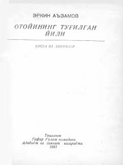

OTInsoniylik, haqiqatgo'ylik va jamiyatdagi illatlar haqida ta'sirli qissa.
Mazkur asar taniqli o'zbek yozuvchisi Erkin A'zam qalamiga mansub bo'lib, inson xarakteri, jamiyatdagi adolatsizliklar va shaxsiy prinsipiallik mavzularini o'rtaga tashlaydi. Bosh qahramon Asqar o'zining shartakiligi, haqiqatgo'yligi va atrofdagilardagi ikkiyuzlamachilikka qarshi kurashlari orqali kitobxonni o'ylantiradi. Qissa o'ziga xos ruhiy tahlillar va hayotiy voqealarga boyligi bilan ajralib turadi.